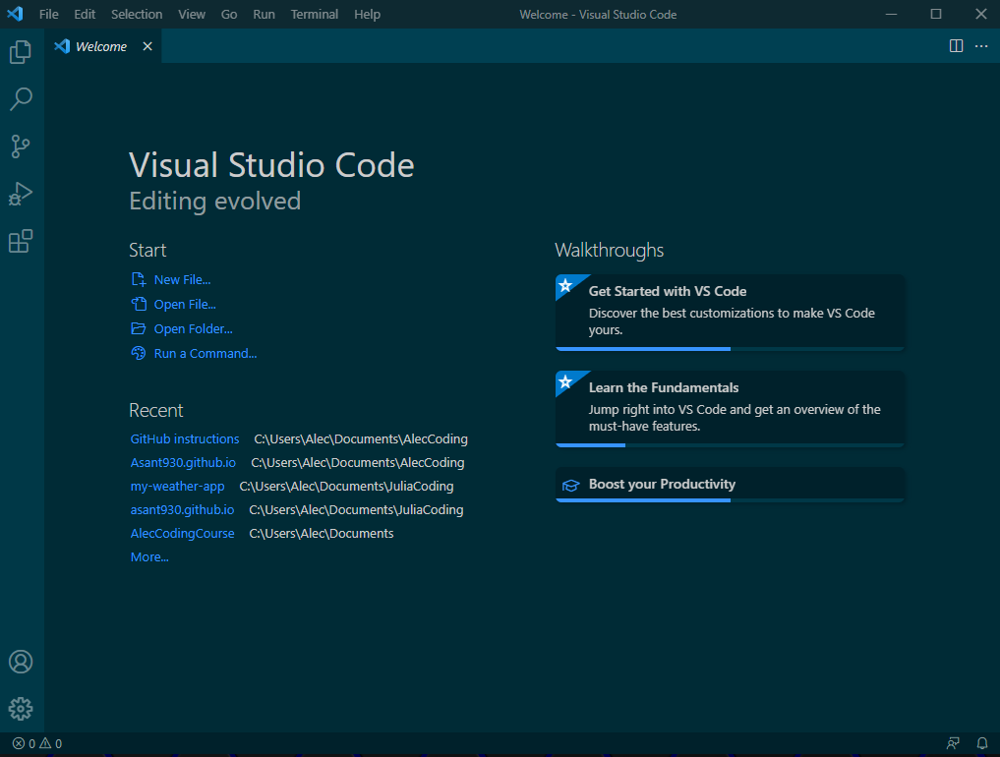
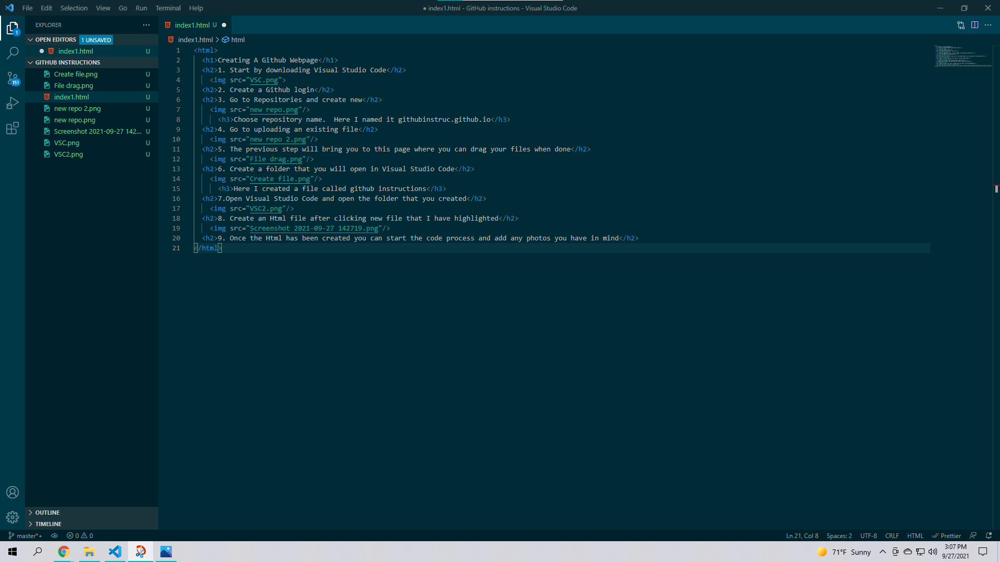

Creating A Github Webpage
1. Start by downloading Visual Studio Code
2. Create a Github login
3. Go to Repositories and create new

Choose repository name. Here I named it instruct
4. Go to uploading an existing file

5. The previous step will bring you to this page where you can drag your files when done

6. Create a folder that you will open in Visual Studio Code

Here I created a file called github instructions
7.Open Visual Studio Code and open the folder that you created

8. Create an Html file after clicking new file that I have highlighted

9. Once the Html has been created you can start the code process and add any photos you have in mind

I have provided the code for the instructions
10. The last step is to drag all the files to the Github Repository shown in step 5 and commit changes